1.1 Welcome & Course Overview
This course is designed for physiotherapists who already have a strong working knowledge of anatomy, biomechanics, and general injury assessment, but limited or no prior exposure to climbing as a sport. Rather than re-teaching anatomy from first principles, each module applies your existing clinical knowledge to the specific demands, movement patterns, and injury profiles seen in climbers.
Across the course you will move from the general (how climbing works as a sport) to the specific (assessing, diagnosing, treating, and returning climbers to sport). This module lays the groundwork: understanding the sport itself, its disciplines, and its vocabulary, so that the clinical content in later modules makes immediate sense in context.
How This Course Works
- Six modules, each building on the last — starting with sport context, moving through relevant anatomy, injury mechanisms, assessment, treatment, and return to sport.
- Content assumes physiotherapy-level anatomy and clinical reasoning; climbing-specific context is explained in full.
- Each module includes practical terminology, tables, and case-relevant detail you can apply directly in a clinic setting.
- Later modules (4 onward) are structured by injury site — fingers, wrist, elbow, shoulder, knee, and ankle — reflecting how climbers actually present.
1.2 What Is Climbing?
Climbing is a sport in which athletes ascend natural rock faces or artificial walls using holds for the hands and feet, relying on a combination of strength, flexibility, technique, and problem-solving. Unlike many sports built around repetitive, symmetrical movement, climbing demands highly variable, often asymmetrical loading through the fingers, upper limb, and trunk — which is central to understanding why climbing injuries look different from those seen in most other athletic populations.
Climbing has grown rapidly as both a recreational and competitive sport, aided by the proliferation of indoor climbing gyms and its inclusion in the Olympic programme from 2020 onward. This growth has brought a corresponding rise in climbing-specific injury presentations in physiotherapy clinics, even among clinicians with no climbing background themselves.
1.3 Disciplines of Climbing
Climbers move between several distinct disciplines, each with different equipment, risk profiles, and physical demands. Understanding these distinctions matters clinically — the same patient may present very differently depending on which discipline they primarily practise.
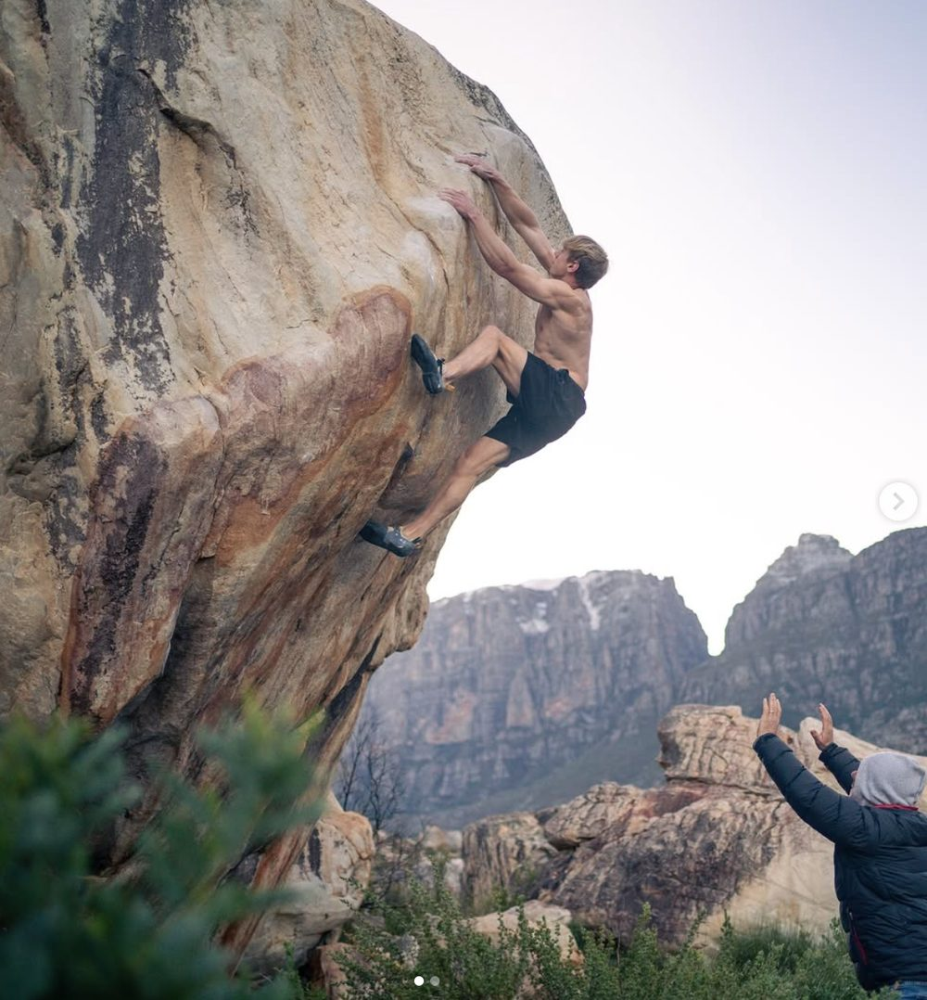
Bouldering
Short, powerful sequences climbed without a rope, typically 2–5 metres high, protected by crash pads below. Emphasises maximal strength, power, and dynamic movement over brief efforts.
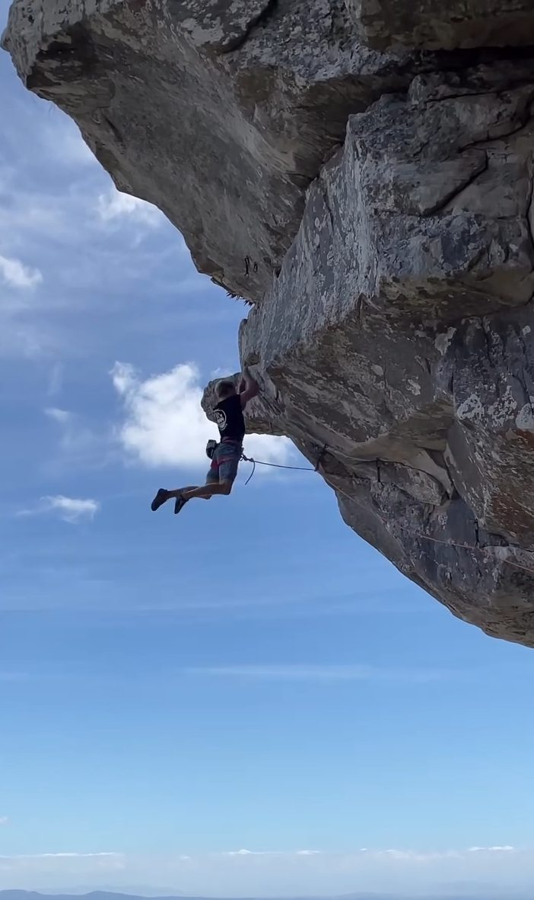
Sport climbing
Longer routes on pre-placed permanent protection (bolts), climbed with a rope and belay partner. Emphasises endurance, pacing, and sustained forearm loading.
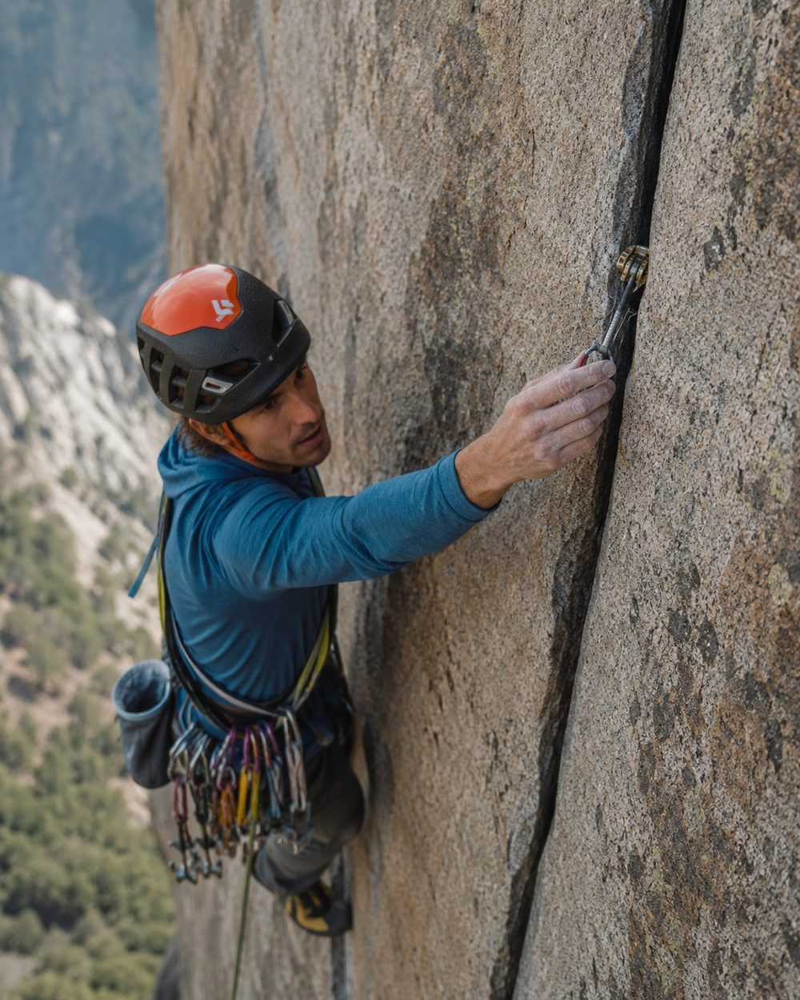
Traditional ("trad") climbing
Similar to sport climbing but the climber places their own removable protection as they ascend. Adds cognitive and logistical load, often resulting in more static, controlled movement.
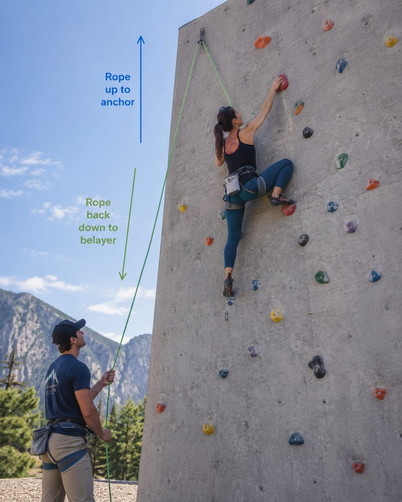
Top-rope climbing
The rope is anchored above the climber before the ascent begins, offering the lowest fall risk. Commonly used for beginners, technique training, and rehabilitation-stage return to climbing.
Most climbers who present clinically will have a primary discipline but often cross-train across several, so injury history should account for cumulative load across disciplines, not just the one the patient identifies with most strongly.
1.4 Competition Climbing
Since climbing's Olympic debut, competition climbing has become an important context for physiotherapists working with high-level athletes. Competitions are organised into three distinct formats, each with its own physical demands and associated injury patterns.
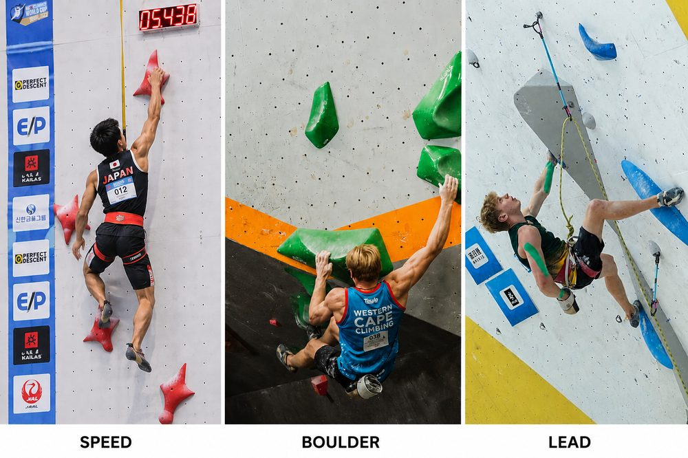
The three Olympic competition formats: Speed, Boulder, and Lead.
| Format | How It Works | Typical Physical & Injury Demands |
|---|---|---|
| Speed | Two climbers race head-to-head up an identical, standardised 15m overhanging wall. Routes are memorised and rehearsed until movements become automatic. | Explosive, repetitive, ballistic movement. High risk of acute finger pulley and flexor tendon injury, ankle/foot impact on the final slap, and shoulder strain from rapid dynamic pulling. |
| Lead | Climbers ascend a tall wall (10m+) within a time limit, clipping into protection points as they go. The climb ends when the athlete falls, and score is based on the highest point reached. | Sustained endurance loading of forearm flexors, prolonged time under tension, and fatigue-driven technique breakdown late in the route — a common contributor to overuse injury. |
| Boulder | Climbers attempt short, powerful sequences ("problems") without a rope, over a low wall with crash-pad landings, usually within a limited number of attempts. | High-force, low-repetition movement: maximal crimping, dynamic lunges ("dynos"), and heel-hooking. Associated with acute pulley ruptures and high-impact lower-limb landings. |
Historically, Olympic competition combined all three formats into a single combined score, which placed unusual cross-discipline demands on athletes. More recent formats separate Speed from a combined Lead-and-Boulder event, better reflecting how most athletes actually train. Future Olympics will further separate medal events into each separate discipline.
When assessing a competitive climber, it is worth clarifying which format(s) they take part and/or compete in, as this materially changes both their typical training load and their injury risk profile.
Indoor vs. Outdoor Climbing
Indoor Climbing
Takes place on artificial walls fitted with manufactured holds and volumes, designed by route setters. A controlled environment with consistent conditions, fixed protection, and padded flooring — ideal for training, skill development, and competition.
Outdoor Climbing
Takes place on natural rock formations. Climbers contend with changing weather, rock quality, and environmental conditions, and often need additional skills such as route finding, placing protection, anchor building, and risk management.
Although the movement patterns are similar, indoor climbing develops physical capacity and movement efficiency, while outdoor climbing requires the application of these skills in a less predictable environment where technical judgement and adaptability are equally important.
1.5 Key Climbing Terminology
The following terms recur throughout this course and in clinical conversations with climbers. Familiarity with this vocabulary will help you take a more precise history and communicate more credibly with climbing patients and their coaches.
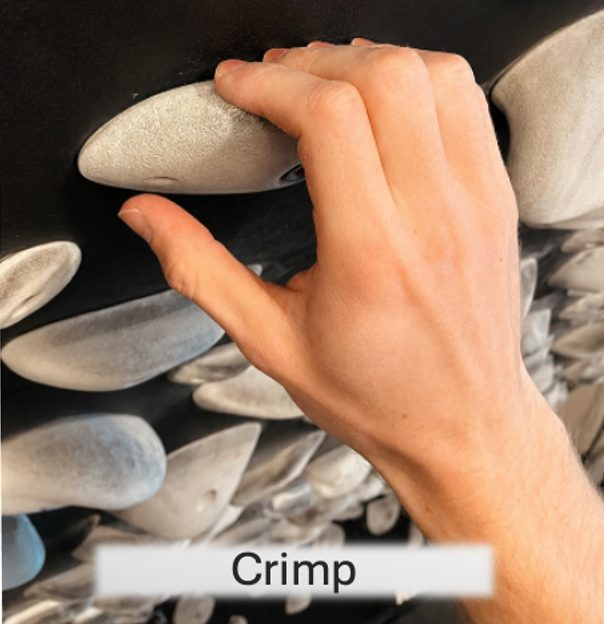
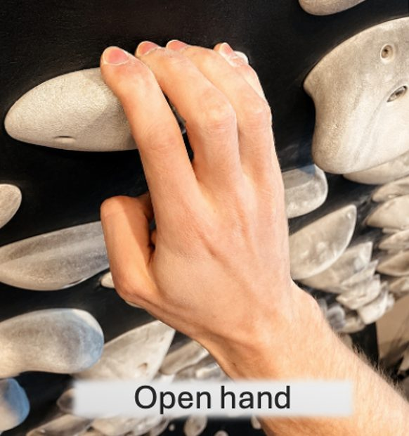
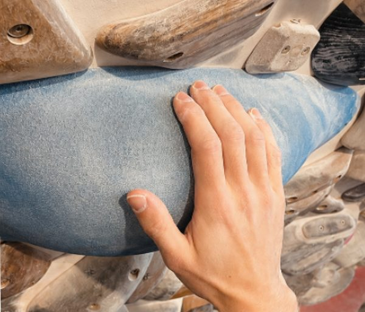
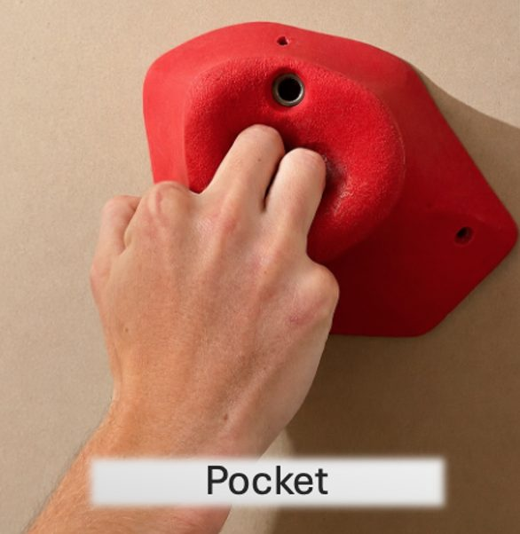
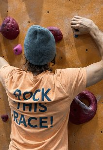
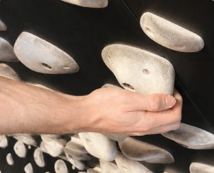
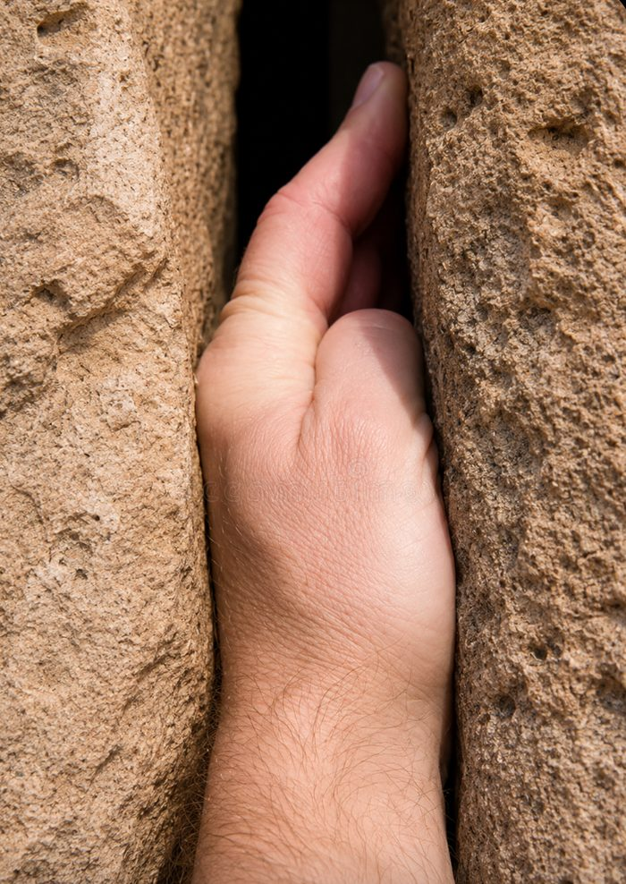
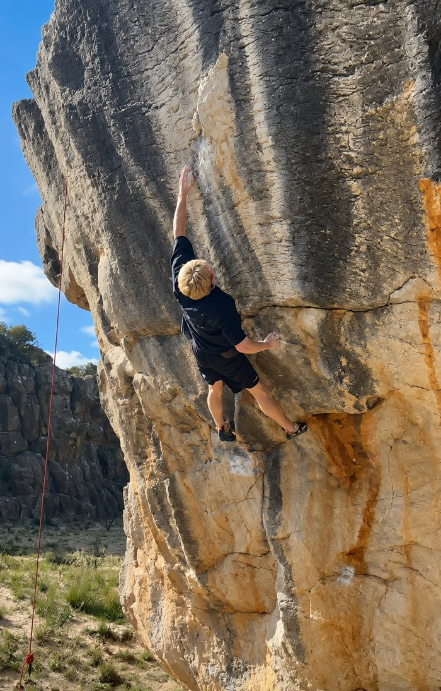
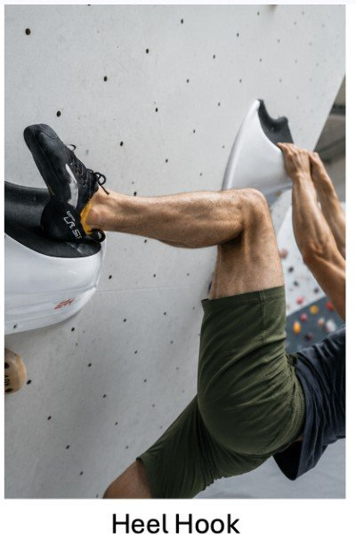
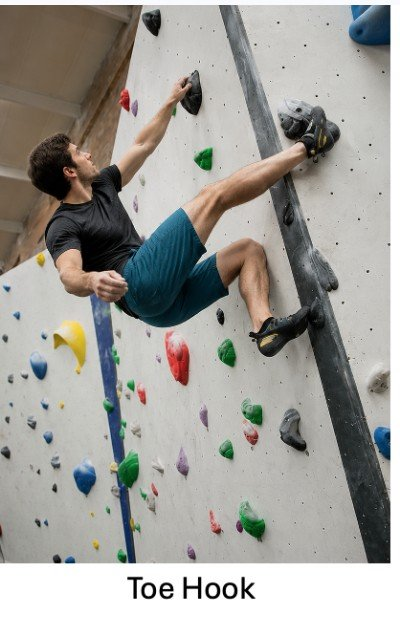
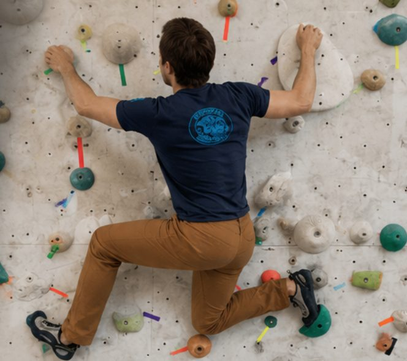
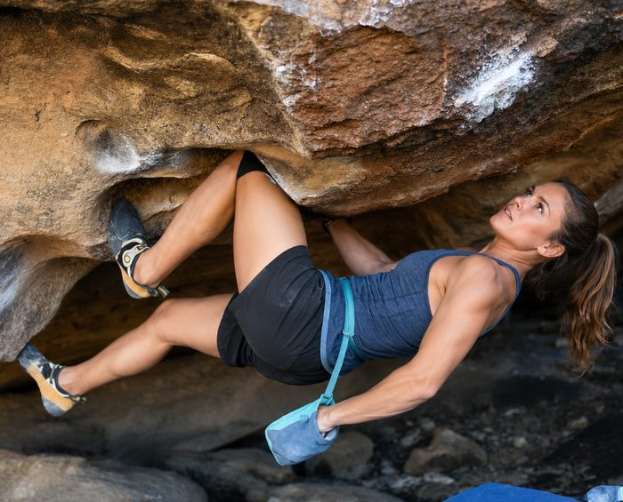
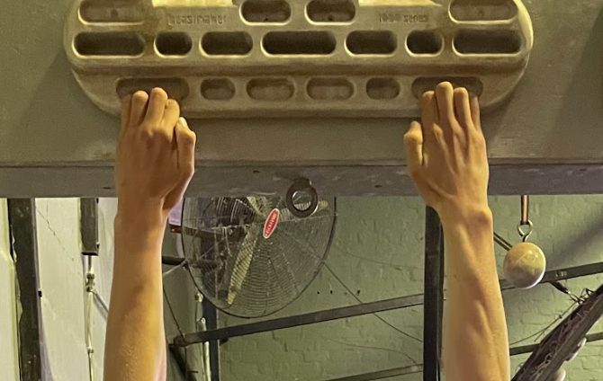
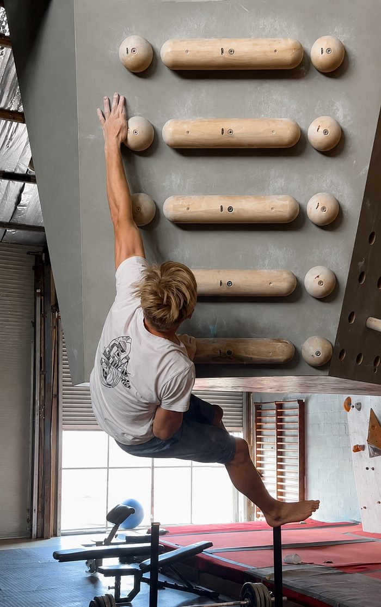
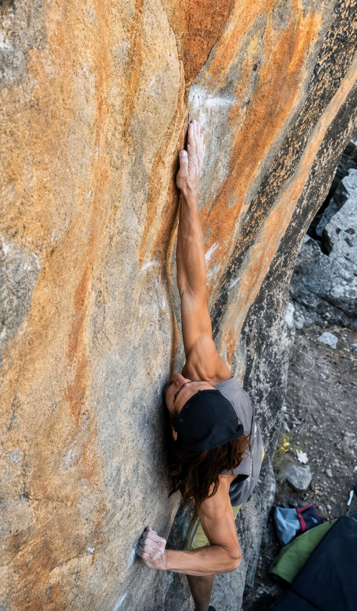
1.6 Why Climbing Injuries Are Distinct
Climbing places unusually concentrated, high-magnitude load through small, slow-adapting structures — particularly the finger flexor pulleys — that are not heavily loaded in most other sports. Several features of the sport combine to create a distinctive injury profile:
- Grip positions such as full crimping create high mechanical loads through the A2 and A4 pulleys, structures with limited blood supply and slow healing capacity.
- Training culture often emphasises finger strength training (hangboarding, campus boarding) at loads that can outpace tissue adaptation, particularly in younger or rapidly progressing athletes.
- Asymmetrical, often single-limb loading through the shoulder and wrist during dynamic and reaching movements differs from the more symmetrical loading patterns physiotherapists may be used to assessing.
- Climbers frequently continue to train through minor symptoms due to the sport's strong training culture and grade-focused progression, which can mask early-stage overuse injury until it becomes more significant. Climbing has been shown to have an anti-depressive effect and is often used as a mental health coping strategy by athletes, this adds to an athletes reluctance to stay away from the gym / crag.
These factors are explored in full in Module 3 (Common Climbing Injuries & Mechanics), and the finger and hand anatomy underlying much of this is covered in detail in Module 2. This module's purpose is simply to ensure the sport-specific context — the disciplines, the vocabulary, and the competitive landscape — is in place before that clinical detail is introduced.
Climbers rarely train or get injured within a single discipline in isolation. A 2024 international survey of over 1,500 climbers found that most respondents regularly trained in more than one climbing discipline, and it is equally common for climbers to supplement wall time with dedicated strength and mobility work — fingerboarding, campus boarding, general resistance training — outside of climbing sessions altogether.
This has a direct assessment implication: a patient presenting after what looks like a single boulder-move injury may in fact have been accumulating load across an outdoor lead session, a strength-training block, and general mobility work earlier that same week.
When taking a history, ask specifically about training and climbing activity across the full week preceding onset, not only the session in which symptoms became apparent — the true precipitating overload may sit outside the discipline, or even outside climbing itself, where the injury happened to become symptomatic.
Reference: Grønhaug G, Saeterbakken A, Casucci T. Painfully ignorant? Impact of gender and aim of training on injuries in climbing. BMJ Open Sport Exerc Med. 2024;10(3):e001972.
Summary
Climbing is a sport built around variable, asymmetrical loading of the fingers, upper limb, and trunk, practised across several distinct disciplines and, at competitive level, three distinct formats — Speed, Lead, and Boulder — each with different physical demands. With this context in place, Module 2 moves into a detailed, climbing-specific examination of hand and finger anatomy.
25 questions, 80% pass mark. Passing unlocks Module 2 automatically.